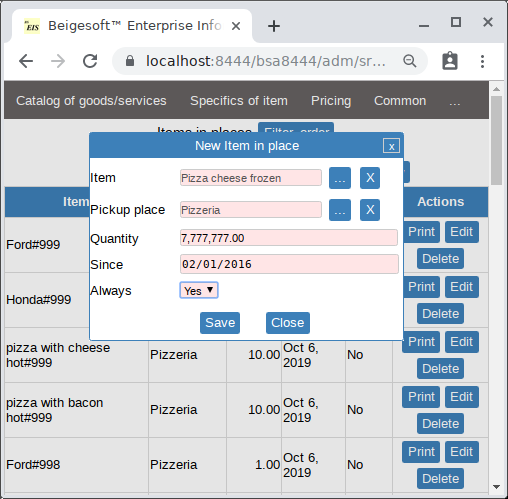
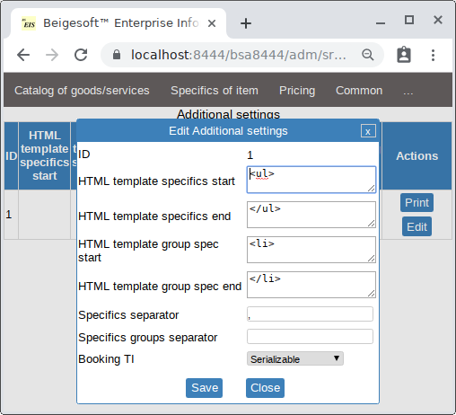

Bob's web-store example. Part 1, catalog.
Beigesoft™ web-store allows you to create any catalog of goods and services. You can create dynamically (without programming) any good's or service's specifics (characteristic), e.g. "Color", "Size", "Car's body type", "Car's fuel type". And these specifics is ready to use in the filter. Beigesoft™ web-store has advanced dynamic internationalization, so your catalog will be appeared in the language that a buyer chose.
Any catalog can contain your goods and services as well as something else's ones (that belong to other sellers)
Bob decided to use Beige-Webstore (it's included into Beigesoft™ EIS) for selling his pizza. He also decided to start a new business activity - allow other sellers to sell their used cars via Bob's web-store. People trust Bob, so Bob will inspect other seller's cars to insure buyers that all information about goods is truthful. Other sellers will pay fee to Bob for his service after they have sold their cars.
At start, Bob opened the menu -> Administrator and filled the "trading settings":

He set the web-store name to "Bob's store" and the "Use advanced internalization" field to "Yes".
* A base online price category must be added and set here, otherwise any buyer will get the error!
Bob added several catalogs into "menu - Catalog of goods":

* These catalogs must have "contain goods"="Yes"!
To add a sub-catalog into a catalog bob uses the Menu -> Subcatalogs in catalogs:
To add an item into catalog Bob uses the Menu -> Items in catalog:

Then Bob added a new Pickup place:

Then Bob added a Item in place for every item, e.g.:

The is always property means that customers can order this item without checking availability.
Then Bob added a new Specifics of item "Image":
Then Bob added a new Specifics of item "weight" of type "Numeric":
Then Bob assigned the Specifics of item "Image" for every goods, e.g:
Then Bob assigned the Specifics of item "weight" for every goods, e.g.:

Then Bob assigned the "Price category" "price for all" and a price for every goods, e.g.:

After the data has been completed, Bob pushed the Refresh goods in list in the "Menu-..."
As a result, the web-store filtered catalog "Pizza" is:

The dynamically added specifics "Weight" is in the filter:

S.E. sellers.
To register a seller, you should add it in the "Menu -> Administrator -> ... -> User", then add a User role for this user with exactly the 'seller' role:

Then you should add S.E. seller as "Debtor/Creditor" in the accounting main menu. Then you should add S.E. seller as "S.E.Seller" in the "Menu->Administrator -> Catalog G/S".
Any S.E.Seller can create its own goods/services. It can see neither software owner's accounting information (except shared information such as "Unit of measure" or "Pick-up place") nor other S.E. sellers information. The software administrator only can see S.E.Seller's information, it can't change it by using the HTML interface (it can change it only by using the direct database access). Any way, only the web-store administrator can add/delete any S.E.Seller's item to any catalog.
At start, Bob added information that any S.E.Seller can't add: "Pickup place":
- New York
- spec name bold: spec value1 value2 :SPECNM: :VAL1 :VAL2
- :SPECGRNM - name of specifics group, e.g. "CPU" for computer that has specifics set "CPU brand, speed, number of cores" - CPU: Intel, I6-2001M, 4 Cores, 2000GHz
- :SPECNM - name of specifics, e.g. "Weight"
- :VAL1 - specifics value#1, e.g. "0.23"
- :VAL2 - specifics value#2, e.g. "pound"

then he added "Type of chooseable specifics of item" for cars:
- Manufacturer
- Color
- Body type
- Fuel type
- Transmission
- Manufacturer of type "Chooseable", chooseable type "Manufacturer", used in filter
- Color of type "Chooseable", chooseable type "Color", used in filter
- Body type of type "Chooseable", chooseable type "Body type", used in filter
- Fuel type of type "Chooseable", chooseable type "Fuel type", used in filter
- Transmission of type "Chooseable", chooseable type "Transmission", used in filter
- Year of type "Integer", used in filter
- Embedded HTML of type "Embedded file", not show in list
- Specifics group "Image set1"
- Image1 of type "Image in set", group "Image set1", not show in list
- Image2 of type "Image in set", group "Image set1", not show in list
- ...
- Image20 of type "Image in set", group "Image set1", not show in list
After that the item's specifics are:
Then Bob added values set of chooseable specifics "Manufacturer":
- Ford
- Honda
Then Bob added values set of chooseable specifics "Color":
- Black
- White
- Silver
Then Bob added values set of chooseable specifics "Body type":
- Sedan
- Wagon
- Van
- Hatchback
Then Bob added values set of chooseable specifics "Fuel":
- Gasoline
- Diesel
Then Bob added values set of chooseable specifics "Transmission":
- AT
- MT
- 4WD
Adding a car by a S.E.seller.
A seller should add a S.E.Good - e.g. "Ford 2010", then add a Good in place:
- item - "Ford 2010"
- pickup place - NY
- Quantity - 1
- Image
- Year - 2010
- ...
Item detail page. Embedded HTML.
You should use an embedded HTML file to make a pretty description (without images). Seller should edit the detail description HTML template. It should edit text exactly inside the HTML tag DIV with the class name "embed-html" by using any HTML editor. CSS bootstrap library should be also provided to a seller to preview this template in same way as on Beigesoft Web-store.
Advanced internationalization.
To make an embedded HTML on a detail page in other language you should:
- make a new HTML file based on the template with new language, you can name the file as you want
- then set the "languages" field to comma separated other languages codes, e.g. "ru,fr" - Russian, France, in an item's specifics with embedded HTML. Set the "language" field to current file's language, e.g. "ru".
- then push the "Save" button to upload the HTML file in other language
Internationalization of all other things is made in the same way as described in Overseas sales. Advanced internationalization.
Final
Finally Bob just added S.E. goods in the catalog and refresh the items list. The catalog is in "en/ru":


* you can check it out, that this page for that filter and goods (4000 items) is too slow (page refreshing takes about 1 minute) on SQLite, but it's fast on Postgesql and MySql. Some filters (e.g. "Cars / Manufacturer In list (Ford, Honda) / Color In list (Red) / Order by Price ascending") make the application non-responded only for SQLITE, so do not do it and worry about it.
The detail page in "en/ru" is: